Overview
In this project, we primarily worked on how to implement a physical renderer by using path tracing algorithms and estimated radiance and lighting conditions for types of lighted scenes. Moreover, we also worked on generating rays to represent light features in our images and worked on how to represent their intersections with different types of Primitives and planes. Further, we also worked on constructing a tree representation of our Primitives for each image and how we may go about speeding up our rendering times by decreasing frequent ray intersection tests and ordering primitives within our image by their average centroid. In the subsequent parts of this project, we worked on estimating the correct lighting conditions for Cornell Box images and how to represent shadows and reflections of light within our “closed” image. Once we correctly implemented reflectance and emissions, we continued by using recursion to estimate the number of bounces of light to represent indirect lighting in our image, and used mathematical samplers to estimate direct lighting radiance for different meshes. Finally, in order to reduce computational complexity of our sampling, we implemented adaptive sampling in order to only sample in difficult-to-converge parts of the image in order to save time for renders with complex lighting conditions and many primitives. Overall, this project taught me a lot about the amount of mathematics that goes into representing bounces of light and radiance of different parts of an image, and also how one can construct trees to represent different segments of an image or mesh and more broadly how we can use path tracing to render images with many different lighting conditions and sampling and intersection constraints.
Task 1: Ray Generation
First, I implemented ray generation through filling in the Camera::generate_ray() function. This function was simple to implement as I first had to represent the bottom left and top right corners of our window in world space, which I generated through the formulas in the spec using the tan() function and converting our field-of-view angles over the x and y axes from degrees to radians. Once I had these vectors, I could “interpolate” our (x, y) image space coordinates into a world space coordinate by translating (x, y) from the box defined by (0, 0) and (1, 1) to the vectors in world space representing the bottom left and top right corners of our world space point of view. I then multiplied this resultant vector by the camera-to-world rotation matrix and normalized our vector since the ray direction must be a normalized vector. I finally instantiated the ray with the current camera position (pos) and the normalized interpolated vector as our direction. Finally, I bound the t parameter of the ray with nClip and fClip, respectively and returned the ray. Continuing in this, I also had to implement the PathTracer::raytrace_pixel() function to provide the correct integral of radiance for the given pixel position. I did this by iterating through ns_aa samples of our pixel obtained from gridSampler and called the generate_ray function on our provided pixel coordinates added with the sampler coordinates (since we want to sample and generate rays all across the pixel, not just in the corner), scaled/divided by the width and height of the samplebuffer. I then called the estimate global illumination radiance function on this generated ray and added this to a running total of our sampled radiances. I then update the pixel in sample_buffer with a radiance of the total divided by the number of samples.
From here, I needed to implement triangle and sphere intersection with our rays. First, implementing the triangle intersection, I created a function that generated the barycentric coordinates for when a ray either intersects or doesn’t intersect our triangle. This function used the Möller Trumbore algorithm discussed in lecture in order to find the barycentric coordinates and the value of t at which our ray intersected the plane, all of which was returned in a 4-dimensional vector. We obtained these values since triangle.cpp had vectors for each of the vertex positions labeled p1, p2, and p3. Then, for the has_intersection method, we first called the barycentric coordinates method on the provided ray, then checked that all the barycentric coordinates were bounded between 0 and 1, and checked whether our provided value of t was bounded between the rays min_t and max_t (set to nClip and fClip earlier in this section). If all of these constraints were true, then we would update the value of r.max_t to the new value of t found by the Möller Trumbore algorithm and return true that an intersection existed. Otherwise, we would return false. For the intersect() method, I first generated the barycentric coordinates and called the has_intersection() method, and if this was the case (returned true), then I would set the attributes of the provided Intersection struct, where I would set the bsdf to get_bsdf(), the primitive to our current triangle, and the t-value of the isect to the max_t value of the ray (which was changed in has_intersection to reflect the value of t when the ray intersects the triangle). Finally, I set the intersection struct normal to the unit vector of the weighted sum of each of our vertex normals (weighted by the barycentric coordinate values we found) and returned true. If we had no intersection, I returned false.
Finally, setting the sphere-ray intersection, I was able to use the formula provided in lecture and the spec where we solved the quadratic equation (o + td - c)^2 = R^2 for the value of t. I then performed error checking in the Sphere::test() method to ensure that our roots were real and bounded by the min_t and max_t of the provided ray. If this was the case, I would set t1 equal to the smaller root and t2 equal to the bigger root and return that an intersection had occurred. Then, in the has_intersection() method, I would call this test() method and set the max_t of the ray to t1, since we would want to bound our ray tighter to the first intersection point so our rendering pipeline would become more computationally efficient. Finally, in the intersect() method, I called has_intersection and if an intersection occurred, I set the intersection struct attributes. Specifically, I set the bsdf equal to get_bsdf(), the primitive to the current Sphere object, the value of t to the ray’s max_t (which we set to t1 in has_intersection), and finally I set the normal of the intersection struct to the unit vector representing the difference between the first intersection point of the ray and the center of the sphere since this normalized difference would be the surface normal at our intersection point.
Following are multiple images with normal shading resultant from our modifications in part 1.


Task 2: BVH
My BVH construction algorithm followed the requirements and design advice provided in the project spec, and I used one of the recommended splitting heuristics (the average of centroids along a specified axis). Specifically, after the provided starter code in the function, I first returned the node if the number of primitives it had was less than the max_leaf size, then I iterated through all of the primitives in the provided start and end iterators and summed their centroids, then finally divided by the number of primitives in this set. I did this in order to get an average of the centroids along each axis. For this part, my goal was to use this centroid average as my heuristic so thus I did this computation first as I needed the average centroid along the preferred splitting axis in order to partition all primitives within the start and end iterators into left and right children. I chose this heuristic as computing the average centroid seemed a computationally inexpensive route and would help create evenly-sized sets of left and right children in most cases, so this approach seemed like the simplest to implement and most sound heuristic except in unique edge cases.
From here, I found the preferred splitting axis by finding the maximum of the bounding box extent along the x, y, and z axes, then chose the axis with the biggest bounding box extent. From here, I was able to partition all the elements in our primitives iterator by calling std::partition for all primitives between start and end, using the comparator of the centroid of each primitive element compared to the average centroid along the preferred splitting axis. This function returned a midpoint and had all elements sorted by their centroid average along the splitting axis, so from here I only had to check whether this midpoint was equal to the start or end, in which case I set the midpoint equal to directly in the middle of the start and end iterators (since we would want to create roughly evenly-sized sets of left and right children, and we want to avoid recursing infinitely when our sets are poorly partitioned). Finally, I recursively called construct_bvh() for the left and right children of our current node, where the iterators for these were set to (start, midpoint) and (midpoint, end) respectively. I finally then returned this current node.
Following, attached are multiple large DAE files that could only be rendered through a correct implementation of our construct_bvh algorithm.
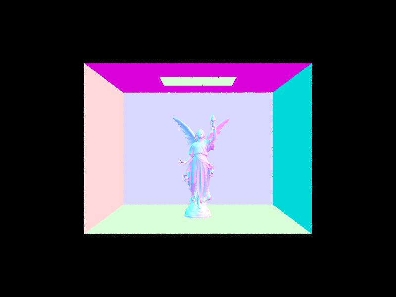
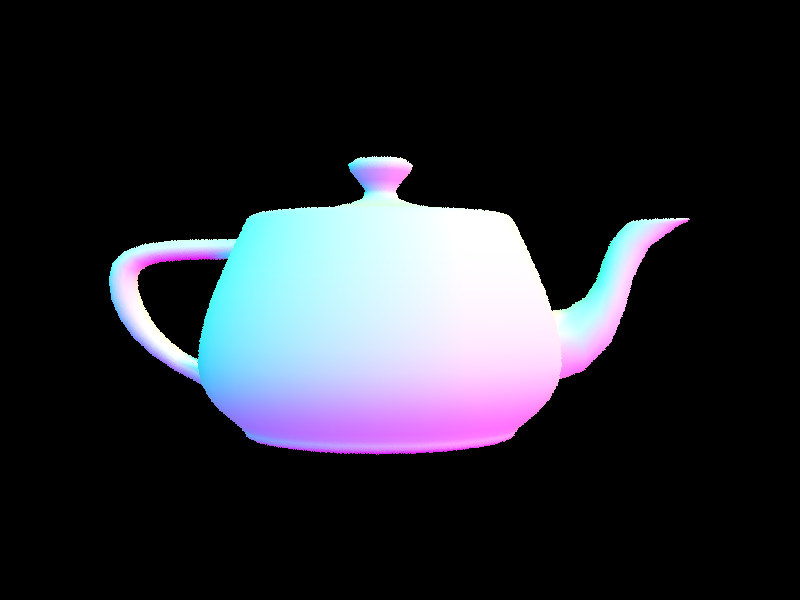
Additionally, below is a table of our comparative render times for images before and after our construct_bvh() implementation – as the table shows, we have roughly exponential speedup times, with slight variance in our render times due to hardware differences and CPU load while rendering. We specifically note that our render times illustrate that our code correctly runs as our new ray intersection complexity is roughly O(log(n)) while the previous intersection complexity was roughly O(n) (shown in the table below).
| DAE Files |
Render Time BVH |
Render Time Naive |
Isect Test/Ray BVH |
Isect Test/Ray Naive |
| cow.dae |
0.0436s |
13.8934s |
5.928 |
351.451 |
| maxplanck.dae |
0.0544s |
128.2523s |
6.193 |
4483.5327 |
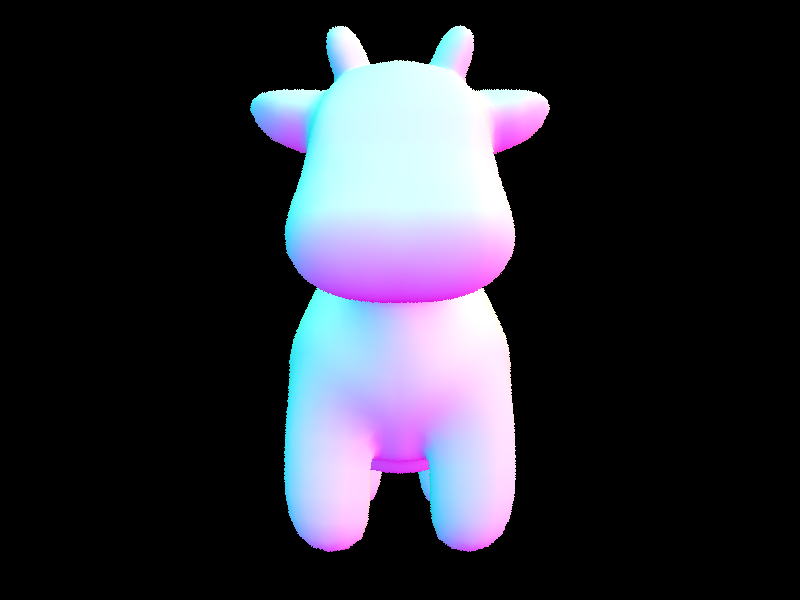
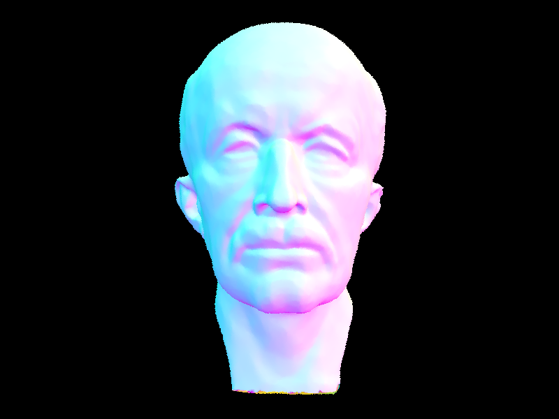
Task 3: Direct Illumination
The goal of hemisphere sampling is to calculate radiance by sampling uniformly across a hemisphere to obtain a measurement for direct lighting on a specific point. To achieve this, first, I implemented the hemisphere sampling through iterating through the total number of light samples we obtained through our command-line parameterization. Then, I obtained the current hemisphere sample from the provided hemisphereSampler object, one specific instance/estimate when performing our Monte Carlo estimator. From this, the starter code had already calculated the hit point of the ray and we could convert our sampled vector from object space to world space, so I created a new ray representing this hit point and our sampled direction. For numerical precision errors, I set the min_t of this ray to be EPS_F. Finally, if the BVH had an intersection between this ray and a new intersection struct I created, then I would use the reflection equation described in lecture and add this to our current value of L_out. To calculate this reflection equation, I already had the BSDF emission f() equation and the cosine of the current sample, so I could directly calculate the newly sampled L_out value and add it to our L_out running total. I would then return this vector divided by the number of samples as our hemisphere sampling process was complete over the total number of samples.
For importance sampling, our goal was to sample all lights individually as opposed to just the hemisphere lights, so I implemented this by first iterating through all lights in the scene then iterating all over our ns_area_light samples and processing them accordingly. Specifically, I would first iterate through all the lights we wanted to sample individually and generate ns_area_light samples for each light through the provided sample_L() function, which also instantiated our wi, pdf, and distance to the light variables correctly. Once this was done, I generated a new ray with the given hit point calculated in the starter code and in the direction of our wi unit vector from our sample function call. I then set the min_t and max_t of this ray to EPS_F and the distance to the light subtracted by EPS_F, respectively, as we didn’t want numerical precision issues and we wanted to ensure that we didn’t intersect with the light itself and were concerned rather with how our object blocked the light. Then, similar to hemisphere sampling, we used the BVH intersect method to check whether our ray intersected the BVH and placed this intersection into a new Isect object. If an intersection did occur, and the z-value of our wi sampled vector (when converted from object to world space) was nonnegative, then we would update the value of L_out with the product of our current sample, the BSDF reflectance, and our cosine and pdf normalization factors. Finally, if the current light was a delta light, there would be no reason to continue sampling besides our first sample, so we would break from our inner loop here and continue to the next light. At the end of sampling each light, we divided L_out by the total number of samples taken (either ns_area_light or 1 for delta lights), and finally returned this radiance of L_out.
Additionally, I had to change est_radiance_global_illumination() in order to return the sum of the zero and one bounce radiance, and I had to implement one_bounce_radiance() to return either the hemisphere or importance sampled lighting depending on the command-line inputs.
Following are pictures of the hemisphere sampling:
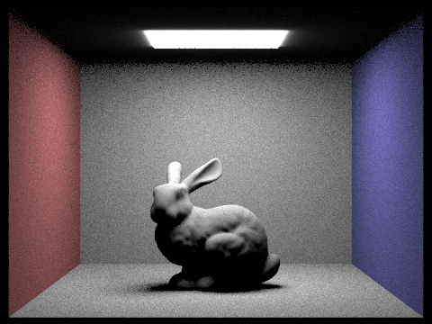
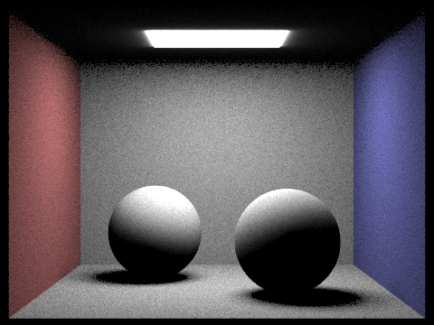
Following are pictures of the importance sampling:
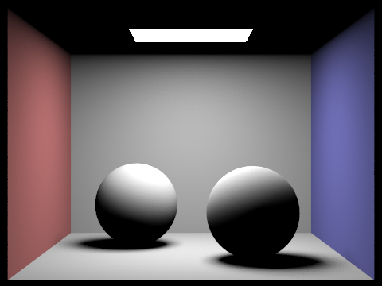
As shown in the pictures, the primary differences between hemisphere and importance sampling have to do with the amount of perceived “noise” in the background of these images. With importance sampling, our background (the walls of the Cornell box) is much smoother and devoid of individual noisy measurements, while we see frequent black spots and dots in the hemisphere sampling (primarily present in the corners of the room and where the walls meet). We note that this is likely the case since first, importance sampling converges much faster than hemisphere as we sample lights directly as opposed to many points indiscriminately in the hemisphere. Additionally, this is likely to be the case since hemisphere sampling creates lots of rays but very few that actually intersect with a light point, thus causing lots of black spots in the image as despite having lots of samples we still don’t sample frequently in critical areas where light sources would hit as we choose points uniformly.
Following are pictures of one scene rendered with distinct numbers of light rays when using importance sampling (in order, l = 1, 4, 16, 64, and s = 1 for all generated images):
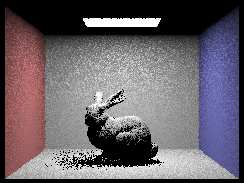
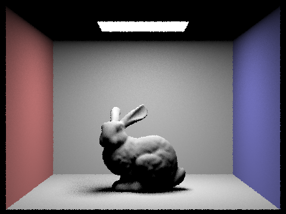
We see that for these images the noise level decreases significantly when increasing the number of light rays from 1 to 64 in the provided increments. This is likely the case since as we increase and increase the number of light rays emitted from our light source in the image then there’s a higher probability of our sampled points intersecting at least one of the light rays, so we would include this reflection in our bounce radiance calculations. This would be more prevalent when we have 64 light rays as opposed to 1 since we would more likely intersect sampled points in the scene when our light source emits more rays and thus get a better rendering of how direct lighting reflects through our scene and thus less random black points when rendering the bunny shadow or lighting reflected on the walls of the Cornell box. As a result of more light rays allowing us more samples and more intersections in our importance lighting function, we see that we have less noisy renders and better approximations for our light and reflections when increasing the number of light rays from 1 to 64.
Task 4: Global Illumination
In order to implement indirect lighting, I had to first ensure that my code for f() and sample_f() were correct, which they were as they were implemented correctly in part 3.1. Now, for the N bounce radiance and indirect lighting function, I had to first add the one_bounce_radiance() to our L_out radiance output, but only if we are accumulating bounces or the current ray depth was equal to 1 (as this means that we are on the Nth bounce of light and want to return only the radiance in this bounce if accumulation is set to false). Then, I call isect.bsdf->sample_f() to get a sample of the current surface diffuse BSDF radiance, and also to set our wi direction vector and the current pdf (sampling probability density function) normalization factor. From here, I check that the maximum ray depth is greater than 1 and continue if our coin_flip is true or the current ray depth is equivalent to the maximum ray depth. This allows us to recurse correctly as we only want to recurse and sum L_out from the first bounce and onwards if accumulation is true, and only want to set L_out equal to the last bounce if accumulation is false. From here, I create a new ray in the sampled direction and with the current hit point, and set the min_t of this new ray equal to EPS_F to avoid numerical precision errors. I also set the new ray’s depth to the current ray’s depth - 1 to help our recursion converge and to keep track of which bounce we are currently recursing over. From here, we call the BVH intersect() function to check if our current ray intersected any primitive in the BVH, then we add the recursed at_least_one_bounce result multiplied by the sample we took in sample_f, scaled and normalized by the pdf, the cosine of wi, and if our roulette returned true scaled by this roulette probability as well. If no intersection occurred, we would return a 0 vector since there would be no indirect lighting since no bounce would occur at an intersection point. Finally, we return our indirect radiance in L_out. We settled on a coin flip probability of 0.67 (to continue) as I believed that continuing in ⅔ of cases and stopping in ⅓ would be a somewhat round figure and it provided correct results similar to the images in the homework specifications.
Following are images rendered by using global direct and indirect illumination (with 1024 samples per pixel):
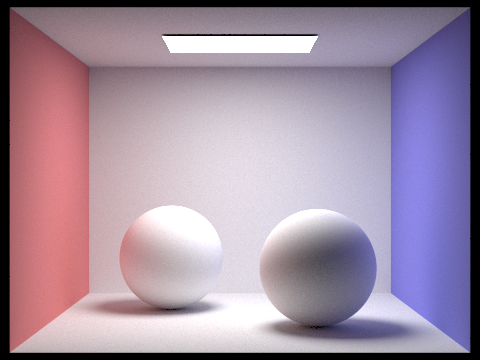
Next, we have one scene rendered with first only direct illumination and secondly only with indirect illumination (with 1024 samples per pixel).
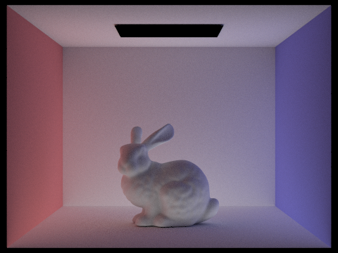
We see here that with the indirect illumination our image is much less bright since we don’t count the light reflection from the zeroth bounce or first bounce – explaining why our light source is not present in the indirect lighting image. We do see, however, that the bottom half of the bunny in the indirect illumination image is brighter than in the direct illumination image since the light rays reflecting off the ground would brighten the bottom of the bunny and the walls slightly, but the overall lighting of the image would be much less since this is present in single and zero bounce illumination (which is shown in the direct lighting image). Finally, we also see that the rest of the ceiling is lighted due to reflected light rays caught in the indirect lighting image. Overall, we see that when using direct lighting we only capture light from the top and the first bounce, while indirect lighting allows us to capture the rest of the N (upper-bound) light bounces. Combining these two images gives us our resultant well-lit image capturing all bounces of light and initial emittance from 0 to N.
Next, we show CBbunny.dae images for where we do not accumulate bounces and we only return the mth bounce of light (for m = 0, 1, 2, 3, 4, 5 in order for s=1024):
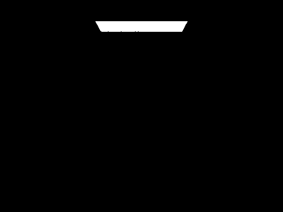
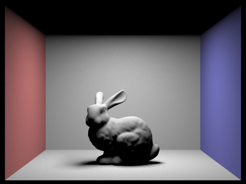
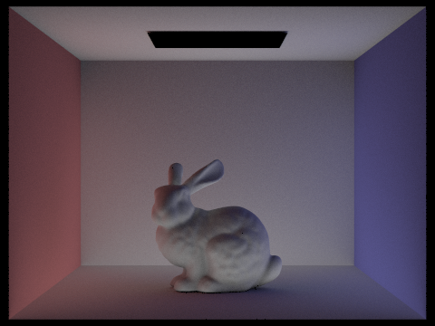
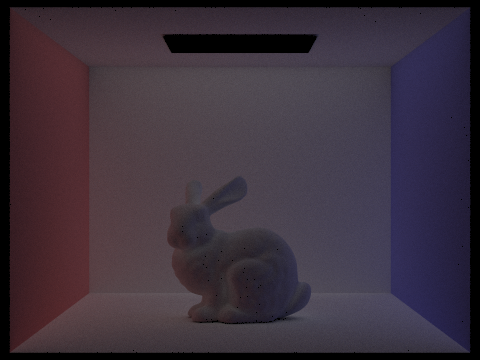
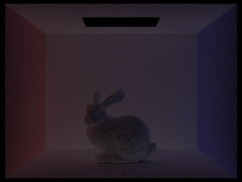
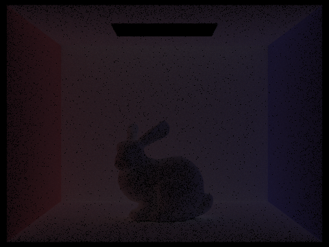
Here, we see that the second bounce that the bottom half of the rabbit and the walls and ceiling are slightly more lit, with this effect most visible on the ceiling. This intuitively follows as on the second bounce of light the rabbit bottom half and the ceiling would be included in the reflection. For the third bounce of light, we see that the rabbit obtains a slight addition in their shadows and the scene itself is much less lit as light rays disperse and lessen as our bounces continue (a reason for why the images progress to get darker and darker). Moreover, we see that in this third bounce the walls and ground are still lit but have fewer reflections and are darker – helping give stronger color to the walls and ground in the final accumulated image (shown in the next set of 6 images). These images give us benefits that our rasterization pipeline could not provide – mainly that since rasterization drew back-to-front rendering based on objects, we wouldn’t be able to capture subtle changes in reflection or radiance changes as light is reflected from the object back onto the walls then onto the object, so the subtle texture differences based on radiance and light emission between parts of our rabbit mesh are shown in these bounces which aren’t and could not be shown in the rasterization renderings.
Next, we show CBbunny.dae renders for where we accumulate bounces and set the max_ray_depth correspondingly to (m = 0, 1, 2, 3, 4, 5 in order for s=1024).
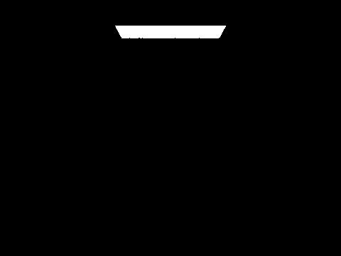
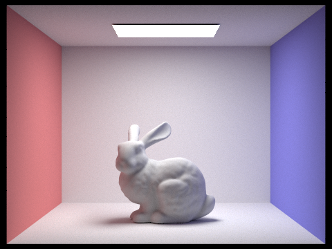
Here, we see that past m=3 we can’t discern changes from a rough eye, but the accumulation from the zeroth to the third bounce allows us to get a close enough approximation to lighting conditions we see in the real world. Moreover, we see that the pictures are well rendered with very few to none noisy regions and our shadows and walls look correct past the second bounce of light. Overall, our renders look accurate and show clearly the build up and accumulation of different bounces of light as we increase the max_ray_depth.
Now, we show our renders implemented with Russian roulette probability for max_ray_depths of (m = 0, 1, 2, 3, 4, 100 and s=1024):
Finally, I’ve attached pictures of the Lambertian spheres DAE with sample-per-pixel rates of s = 1, 2, 4, 8, 16, 64, 1024:
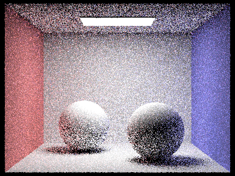
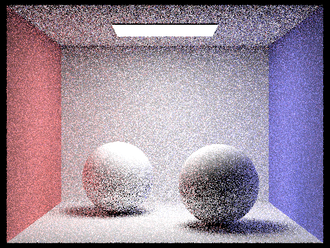
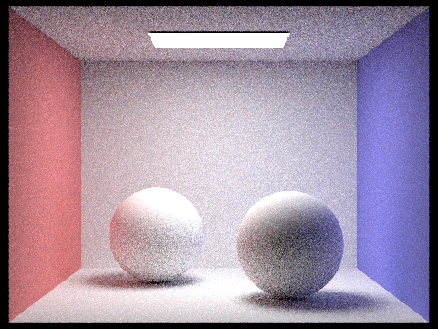
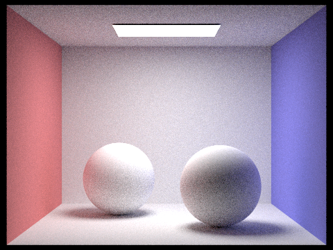
Here, we see that by increasing the sample-per-pixel rate the wall color, shadows, and lighting do not greatly differ, but the noise within the images greatly differs. Specifically, we see lots of white and black dots amongst our images with very low sample rates and lots of noise for our light bounce and radiance calculations – leading to our spotty image quality for low sampling rates. As we increase the number of samples per pixel, we see that the image greatly smoothens out and the image quality is quite high once we get to pixel sample rates of 64 and 1024 and we have much fewer noisy areas within our images.
Task 5: Adaptive Sampling
Roughly, adaptive sampling is a technique to help with reducing the number of samples in certain areas of the image (certain pixels) that converge quickly and sample heavily in regions which take a long time to converge. By using statistics of the mean and variance of pixel convergence, we can use adaptive sampling to determine whether certain pixels would converge quickly with a high degree of confidence (I <= max_tolerance * mu), and thus we can stop sampling them and focus sampling more on complex parts of the image. More specifically, we calculate our convergence factor I as I = 1.96 * sigma/sqrt(n). We can calculate our values of mu and sigma as mu = s1/n and sigma^2 = 1/(n - 1) * (s2 - s1^2/n), where we have that s1 = sum x_i and s2 = sum x_i^2 for our illuminance samples x_i.
Coding-wise, we implemented this in the raytrace_pixel function from Part 1. As one might recall, our Part 1 implementation had us iterate through the sample rate for each pixel and generate our ray samples and keep a running total of the estimated global illumination radiance. We then returned this total divided by the total number of samples.
When changing this function for adaptive sampling, we added our s1 and s2 calculations into the for loop, where we called the illum() function for each of our vector samples to determine the illuminance of each radiance vector. Then, every samplesPerBatch iteration, we would calculate the mean (mu) and variance (sigma^2), and calculate our convergence factor I from these statistical metrics. If I <= max_tolerance * mu, then we would break as this pixel wouldn’t require any additional sampling since it had very likely converged already according to our confidence interval. From here, we would update the sample buffer by calling update_pixel() with our running total divided by the new number of samples (which could be less than ns_aa if we converged quickly through adaptive sampling), and we updated the sampleCountBuffer to the number of samples taken so our image_rate PNG would reflect our updated sampling rates per pixel.
Following are two different scenes with their corresponding noise-free resultant images and their sampling rate images (sampled with at least 2048 samples per pixel, 1 sample per light, and a max ray depth of 6):
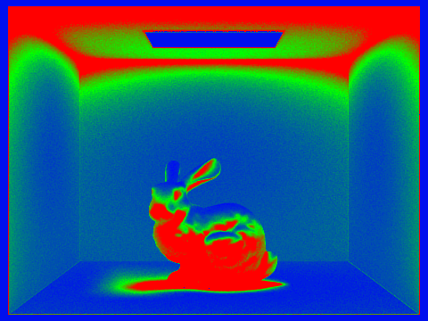
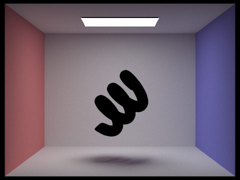
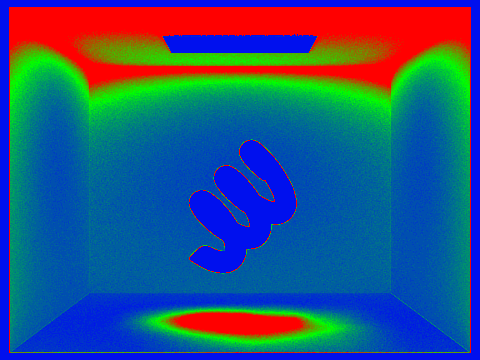